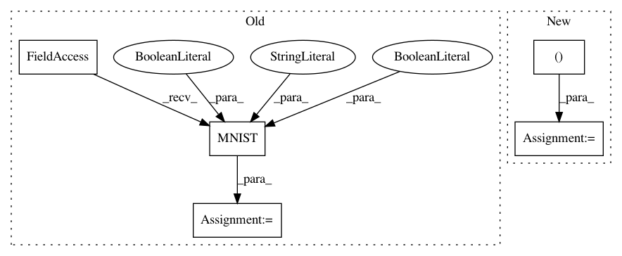

2860e37da4e0b1335f25fcb0f62ab2d81698c752,examples/_tests_mnist_stages2/experiment.py,Experiment,get_datasets,#Experiment#Any#,19
Before Change
download=True,
transform=Experiment.get_transforms(mode="train", stage=stage)
)
testset = torchvision.datasets.MNIST(
"./data",
train=False,
download=True,
transform=Experiment.get_transforms(mode="train", stage=stage)
)
datasets["train"] = trainset
datasets["valid"] = testset
After Change
class Experiment(ConfigExperiment):
def get_datasets(self, stage: str, **kwargs):
datasets = OrderedDict()
for mode in ("train", "valid"):
datasets[mode] = MNIST(
"./data",
train=False,
download=True,
transform=self.get_transforms(stage=stage, dataset=mode)
)
return datasets
In pattern: SUPERPATTERN
Frequency: 3
Non-data size: 5
Instances
Project Name: Scitator/catalyst
Commit Name: 2860e37da4e0b1335f25fcb0f62ab2d81698c752
Time: 2020-01-23
Author: 19803638+bagxi@users.noreply.github.com
File Name: examples/_tests_mnist_stages2/experiment.py
Class Name: Experiment
Method Name: get_datasets
Project Name: ecs-vlc/torchbearer
Commit Name: a894f84b099fb2ab1dee9ebce09361112f2539c2
Time: 2018-08-20
Author: mp2u16@ecs.soton.ac.uk
File Name: docs/_static/examples/vae.py
Class Name:
Method Name: